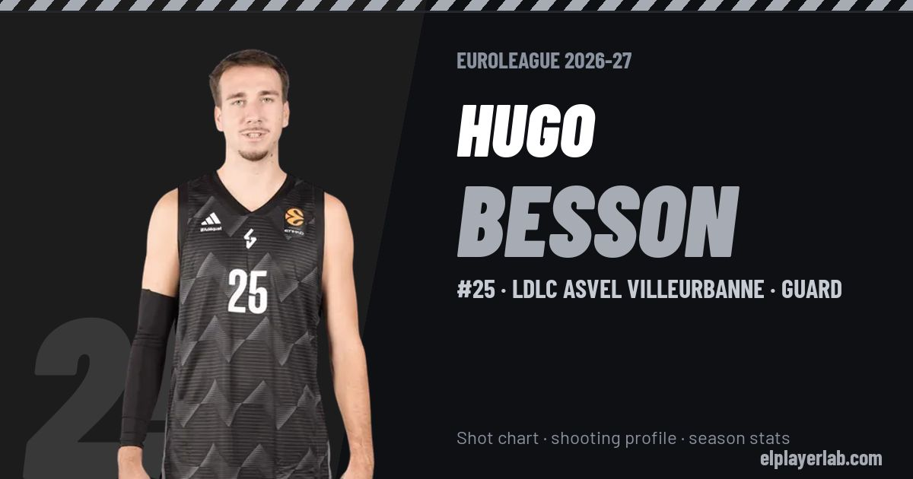

LDLC ASVEL Villeurbanne · Euroleague 2026-27
Hugo Besson
#25 · Guard · LDLC ASVEL Villeurbanne · 2026-27 · 3 games · 12.3 pts · 2.3 reb · 4.0 ast a game

- Number
- 25
- Position
- Guard
- Height
- 194 cm
- Weight
- 90 kg
- Born
- 2001-04-26
- Country
- France
Career
- LDLC ASVEL 2026-2027
- Tofaş 2025-2026
- Manisa 2024-2025
- Varese 2024
- FMP 2023-2024
- Metropolitans 92 2022-2023
- New Zealand Breakers 2021-2022
- Saint-Quentin BB (loan) 2020-2021
- Élan Chalon 2018-2021
Euroleague Player Lab: shot charts, shooting profiles and season stats for every player, rebuilt after every game.